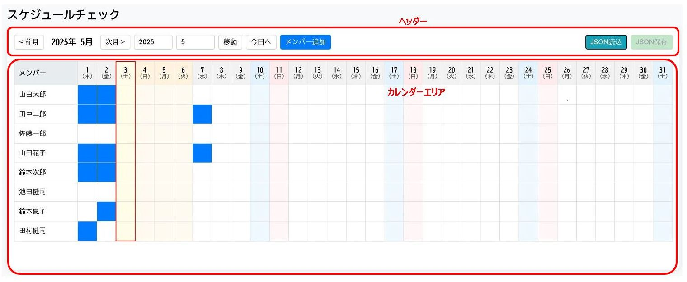

📅 スケジュールチェック (Schedule Check)
チームメンバーなどの月間スケジュールをシンプルなカレンダー形式で管理・確認するためのツールです。
主な特徴
- 月間カレンダー表示: メンバーごとのスケジュールを月単位で表示します。
- 簡単マーキング: 日付セルをクリックするだけで、予定（出勤など）をON/OFFできます。
- メンバー管理: メンバーの追加、名前の編集、削除が可能です。
- 祝日・曜日表示: 日本の祝日、土曜日、日曜日を色分け表示します。
- 今日ハイライト: 当日の列をハイライト表示します。
- 年月移動: 前月/次月ボタンや年月入力で表示月を簡単に移動できます。
- データ保存/読込: メンバーとスケジュールデータをJSONファイルとして保存・読み込みできます。
使い方マニュアル
画面構成
- ヘッダー: アプリタイトルと操作コントロールがあります。
- 年月表示・移動: 現在表示中の年月が表示され、<>ボタンで前月/次月に移動できます。年/月を入力して移動ボタンでジャンプも可能です。
- 今日へ: クリックすると当日の月に移動します。
- メンバー追加: 新しいメンバー行（空行）を追加します。
- JSON読込/保存: データをファイルから読み込んだり、ファイルへ保存したりします。
- カレンダーエリア:
- メンバー列 (左端): メンバー名が表示されます。クリックして名前を編集できます。
- 日付ヘッダー (上部): 日付と曜日が表示されます。土日祝日は色分けされ、当日はハイライトされます。
- 日付セル: 各メンバーの各日付に対応します。クリックすることで予定の有無を青い背景色でマーク/解除できます。土日祝日にも薄く色が付きます。
基本的な使い方
- 予定のマーク/解除: カレンダーエリアの日付セルをクリックします。クリックするたびに青い背景色がON/OFFされます。
- メンバーの追加: ヘッダーのメンバー追加ボタンをクリックします。リストの最下部に空の行が追加されるので、左端のセルをクリックして名前を入力します。
- メンバー名の編集: 編集したいメンバー名のセルをクリックし、新しい名前を入力します。
- メンバーの削除: 削除したいメンバー名のセルを空にしてBackspaceキーを押します（行が1つしかない場合は削除できません）。
- 表示月の変更:
- ヘッダーの< 前月、次月 >ボタンをクリックします。
- ヘッダーの年・月入力欄に数値を入力し、移動ボタンをクリックします。
- 今日へボタンで当日の月にジャンプします。
データの保存と読込
- 保存: ヘッダー右側のJSON保存ボタンをクリックします。変更がある場合、ボタンはオレンジ色!で強調表示されます。
CL[日付時刻].jsonというファイル名でダウンロードされます。空のメンバー行や、予定が全くマークされていないメンバーの情報は保存されません。 - 読込: ヘッダー右側のJSON読込ボタンをクリックし、保存したJSONファイルを選択します。現在のメンバーとスケジュールは上書きされます。読み込んだ日時はボタンの隣に表示されます。